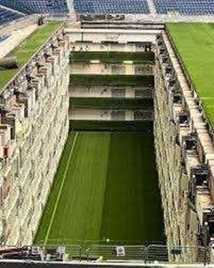
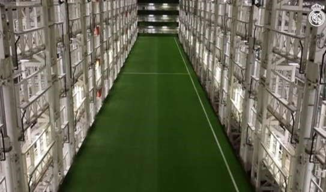
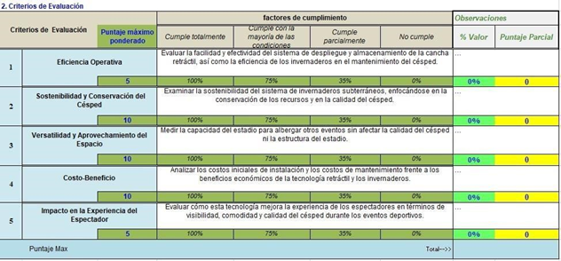
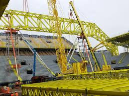

proyecto integrador
proyecto integrador primer semestre
Contenido
1. OBJETIVOS
Como primer objetivo, en el invernadero deportivo lo que se busca es optimizar, potenciar, fortalecer y cuidar el césped, para poder entregar el mejor producto terminado para las diferentes disciplinas deportivas profesionales que en estos se lleven a cabo en los estadios de futbol
- En un segundo objetivo buscamos que el invernadero pueda ser tratado a parte del lugar de donde originalmente este posicionado para su uso, específicamente en una bodega subterránea, donde este pueda ser dividido en bandejas que puedan ser guardadas de manera secuencial una sobre otra, manteniendo un espacio entre ellas para su debido proceso de mantenimiento.
- El tercer objetivo es basado en la proyección rentable que el invernadero pueda aportarle al resto del escenario, donde este pueda ser utilizado para otras actividades socioeconómicas como lo pueden ser conciertos, convenciones, ferias, contingencias coyunturales a la salud o bines testar de la sociedad y demás usos que los clientes opten por usar el espacio sin que dichas actividades afecte el césped que es la principal actividad económica de los estadios de futbol y así transformarlo en un escenario multifuncional.
2. JUSTIFICACIÓN
2.1. Situacion problematica
Los campos de futbol se ven expuestos a muchos inconvenientes, opr lo tanto muchas veces se tiene que tratar dentro y hasta fuera del campo, ademas de eso el maltrato constante al usarlo en partidos hace que se deteriore cada vez mas, sin contar las veces que se presta para actividades ajenas al futbol
2.2. Análisis de la situación actual
Actualmente como un único proyecto que existe es la cancha retráctil del Santiago Bernabéu, que se construyó como para optimizar el estadio para diferentes eventos sean deportivos o socioeconómicos, renovación tecnológica y un invernadero subterráneo que logre dar una cancha supremamente profesional para el equipo de primera división del Real Madrid como los dueños el estadio. Junto con la empresa tecnológica Sener, ellos idearon el proyecto pensando en que los grandes estadios deportivos se han convertido hoy en verdaderos centros de reunión de las ciudades. Sin embargo, la función deportiva principal, para cual fueron concebidos la mayoría de ellos, condena su uso y explotación para actividades alternativas como conciertos, ferias, convenciones u otros eventos deportivos. Esta premisa fue la que inspiró a los ingenieros para desarrollar un nuevo concepto de estadio, dotado de la más avanzada tecnología que permita retirar el terreno de juego de césped naturas de manera rápida y segura y cualquier estadio del mundo, construido o por construir. Así surge el sistema de césped retráctil que permite retirar el terreno de juego de césped natural de manera totalmente automatizada. El espectacular sistema de césped retráctil ideado y patentado por Sener fue ofrecido al Real Madrid, para instalarlo en el estadio Santiago Bernabéu, uno de los más emblemáticos del mundo.
2.2.1 Estudios preliminares
El grupo de ingeniería y tecnología Sener, en base al sistema cuya patente le pertenece, es el ideólogo y cerebro tecnológico detrás del sistema del césped retráctil del estadio Santiago Bernabéu, que ha presentado recientemente el Real Madrid en un vídeo y cuyo proyecto constructivo ha sido desarrollado por Sener para el Real Madrid. El sistema de Sener permite retirar el terreno de juego de césped natural de cualquier estadio del mundo, aunque su diseño original no considere esta posibilidad. De esta manera, cualquier estadio podrá transformarse en un espacio multifuncional donde albergar todo tipo de espectáculos, desde conciertos, convenciones o ferias, hasta todo tipo de eventos deportivos alternativos al principal, incluyendo deportes electrónicos o ESPORTS o incluso eventos náuticos, multiplicando su explotación comercial. Ideado desde su origen por Sener, el sistema dispone de dos ventajas clave frente a sistemas similares instalados en otros estadios. Por una parte, tiene la capacidad de poder ser implantado en estadios ya existentes localizados en núcleos urbanos consolidados donde resulta imposible desplazar el terreno de juego del interior al exterior del estadio. Por otra parte, el sistema desplaza las bandejas con el césped natural a un almacén enterrado denominado Hipogeo, en referencia al habitáculo homónimo bajo la arena del Coliseo romano. Este almacén, dotado con sistemas de ventilación, climatización, iluminación, control y riego, permite crear unas condiciones climáticas ideales para su conservación, facilitando el acceso de personal y material agronómico para un óptimo mantenimiento continuo, con independencia de los eventos que puedan acontecer en el estadio. El sistema también dispone de un conjunto de mecanismos que permiten el desplazamiento horizontal y vertical de las bandejas con el césped, concebidos y diseñados por Sener de tal manera que siempre se garantice la máxima fiabilidad del sistema, permitiendo la rápida retirada del terreno de juego para la organización de eventos. Como patente desarrollada por Sener, el sistema se ha planteado de tal manera que todos sus componentes constitutivos puedan fácilmente adaptarse a la geometría y requisitos de explotación de prácticamente cualquier estadio del mundo ya construido, en construcción o por construirse. En palabras del arquitecto de Sener Jorge Vizcaya, uno de los ideólogos del proyecto: “En muchos aspectos, los estadios se han convertido en los templos de la modernidad. Sin embargo, la función deportiva, para la cual la mayor parte de ellos fueron concebidos, condena el propio uso y explotación de los mismos para actividades alternativas. En Sener, siempre hemos creído que los estadios deben ser diseñados de tal manera que su función transcienda a un mero uso deportivo. Dotados de los mayores avances tecnológicos, deben transformarse en verdaderos centros de reunión de las ciudades, pudiendo aglutinar diferentes funciones e infraestructuras urbanas al servicio de los ciudadanos durante todos los días del año. Esta premisa de diseño es la que nos inspiró para desarrollar este sistema en Sener”. Sener cuenta con experiencia en el diseño de estadios de fútbol como el de Cracovia, en Polonia, o el Arena Fonte Nova, en Salvador de Bahía (Brasil). Como empresa de ingeniería presente en numerosos sectores de actividad, tanto en energía como en infraestructuras, pasando por aeroespacial o naval, el grupo se ha convertido en un referente en innovación, con instalaciones pioneras en todos sus campos de actividad.
IMAGENES DEL PROYECTO
Proyecto en el estadio Santiago bernabeu
Proyecto en el estadio Santiago bernabeu
Proyecto en el estadio Santiago bernabeu
2.2.2 Instrumentos para investigación y levantamiento de información
2.2.3 Encuesta y Criterios de valoración
1. ¿Conoces la tecnología de canchas retráctiles e invernaderos subterráneos en estadios de fútbol?
• Sí, muy bien
• Algo
• Muy poco
• No estaba al tanto
2. ¿Qué tan beneficioso crees que es el uso de una cancha retráctil para un estadio de fútbol?
• Muy beneficioso
• Beneficioso
• Algo beneficioso
• No es beneficioso
3. ¿Qué ventajas consideras que aporta la cancha retráctil a los estadios de fútbol?
(selecciona todas las opciones que consideres)
• Mejora la calidad del césped
• Flexibilidad para eventos no deportivos
• Mantenimiento más eficiente
• Mayor duración del césped
• Otro (especificar) ____________
4. ¿Crees que los invernaderos subterráneos son una solución efectiva para conservar el césped en óptimas condiciones?
• Sí, completamente
• Probablemente
• No estoy seguro/a
• No creo que sean efectivos
5. ¿Cuánto valoras la posibilidad de que un estadio de fútbol pueda transformar su campo en un espacio para otros tipos de eventos?
• Muy valorado
• Algo valorado
• Poco valorado
• No valorado
6. ¿Consideras que la tecnología de una cancha retráctil y los invernaderos subterráneos justifican el coste para los estadios de fútbol?
• Sí, totalmente
• Sí, en parte
• No estoy seguro/a
• No, es demasiado costoso
7. ¿Cuáles crees que son los principales desafíos de instalar una cancha retráctil con invernaderos subterráneos en un estadio de fútbol? (selecciona todas las que consideres relevantes)
• Mantenimiento del sistema retráctil
• Control de temperatura y humedad en invernaderos
• Riesgos de fallos técnicos
• Alto costo de operación
• Otro (especificar) ____________
8. ¿Piensas que los invernaderos subterráneos pueden contribuir a un aprovechamiento eficiente del espacio en un estadio de fútbol?
• Sí, mucho
• Sí, en cierta medida
• No estoy seguro/a
• No, no contribuyen
9. ¿Crees que implementar esta tecnología en estadios atraerá a más espectadores y eventos no deportivos?
• Sí, muchos más
• Sí, algunos más
• No afectará la cantidad de espectadores ni eventos
• No estoy seguro/a
10. ¿Cuál es tu percepción general sobre el uso de canchas retráctiles e invernaderos subterráneos en estadios de fútbol?
• Muy positiva
• Positiva
• Neutral
• Negativa
Resultado de las encuestas realizadas

Criterios de valoracion
2.2.4 Conclusion encuesta
Esta encuesta fue realizada a 10 personas diferentes, y sus diferentes respuestas nos da a entender que aunque hay muchas personas que no estan muy al tanto del proyecto, estas mismas si les gustaria que hubiera innovación dentro de los estadios de futbol, para cuidar el cesped, y para poder explotar ese terreno al maximo , tambien podemos darnos cuenta que la gente considera que es un buen proyecto, exceptuando su mantenimiento y costos.
2.2.5 Diagrama espina de pescado

ESPINA DE PESCADO
3. MARCO TEORICO
3.1.Conceptos y terminología asociada con el proyecto
3.2. Normativa aplicable al proyecto
4. Disciplinas que intervienen en el proyecto.
Ingeniería mecanica
La ingeniería mecánica es una de las ramas más antiguas e importantes de la ingeniería, dicha disciplina estudia y perfecciona específicamente los principios de la termodinámica, transferencia de calor, mecánica, vibraciones, mecánica clásica, mecánica cuántica, mecánica de fluidos, análisis estructural, estática, dinámica, ecuación diferencial, Ondas, Campos, trigonometría, cálculo vectorial, Teoría de control y ciencia de materiales para el diseño y análisis de diversos elementos usados en la actualidad, tales como maquinaria con diversos fines (térmicos, hidráulicos, transporte, manufactura, robótica), así como también de sistemas de ventilación, refrigeración, vehículos motorizados terrestres, aéreos, marítimos y espaciales, entre otras aplicaciones.
Ingeniería mecatrónica
La ingeniería mecatrónica (también, mecatrónica) es una rama multidisciplinaria de la ingeniería, la cual desarrolla dispositivos y tecnologías de varios campos del conocimiento en los que se unen las ramas de sistemas, electrónica, mecánica y control, con el uso combinado de la robótica y de la ingeniería electrónica y sistemas. La mecatrónica engloba así el desarrollo de productos que involucren un sistema de control para productos o procesos inteligentes, lo cual busca crear maquinaria más compleja para facilitar las actividades del ser humano a través de procesos electrónicos de sistemas de control aplicados en la industria.

Ingeniería civil
La ingeniería civil es una disciplina que se encarga de diseñar, construir y mantener infraestructuras como carreteras, puentes, edificios, presas, aeropuertos, puertos, canales, depuradoras y potabilizadores. Para ello, los ingenieros civiles utilizan conocimientos de cálculo, física, hidráulica y mecánica
5. Conclusiones
Un invernadero subterráneo con césped y cancha retráctil es una solución innovadora que combina agricultura, sostenibilidad y funcionalidad en un solo espacio. Su diseño aprovecha las ventajas del subsuelo para mantener condiciones climáticas estables y eficientes, mientras que la cancha retráctil añade versatilidad al permitir el uso del espacio para actividades deportivas, recreativas o sociales. Este tipo de infraestructura representa una respuesta integral a los desafíos modernos, como la optimización del espacio, la sostenibilidad ambiental y la multifuncionalidad en entornos urbanos o rurales. Su capacidad de combinar césped natural bajo control climático con un diseño adaptable lo proyecta como un modelo ideal para comunidades que buscan equilibrar producción ecológica y espacios recreativos, maximizando el uso de recursos y promoviendo el bienestar colectivo.